Садовый центр
Режим работы: Пн-Вс: с 9:00 до 20:00
Позвоните нам:
+7 (495) 926-09-90
 Search
Search
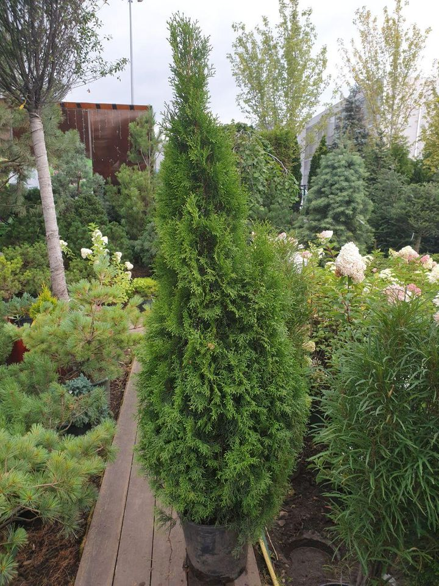
Растение относительно компактное: до 3 метров в высоту и до 100-150 см в диаметре.
⠀ Туя — теплолюбивое растение, место для посадки нужно выбрать солнечное. Ей также крайне важен чистый воздух и безветрие.
Туя равнодушна к заморозкам и прекрасно себя чувствуют даже в северных широтах.
⠀ Дерево может расти практически на любой почве.
Рекомендуемая смесь грунта должна состоят из дерновой земли и торфа, взятых в пропорции 2:1.
⠀ Поливать взрослое растение необходимо один раз в неделю одним ведром воды. Жарким летом частоту поливов лучше увеличить, чтобы засуха не вредила кроне дерева.
Туя Смарагд 1,75-2 м.
4 500,00 p.
Подробная информация
Это хвойное растение, которое также известно под названием «жизненное дерево».Растение относительно компактное: до 3 метров в высоту и до 100-150 см в диаметре.
⠀ Туя — теплолюбивое растение, место для посадки нужно выбрать солнечное. Ей также крайне важен чистый воздух и безветрие.
Туя равнодушна к заморозкам и прекрасно себя чувствуют даже в северных широтах.
⠀ Дерево может расти практически на любой почве.
Рекомендуемая смесь грунта должна состоят из дерновой земли и торфа, взятых в пропорции 2:1.
⠀ Поливать взрослое растение необходимо один раз в неделю одним ведром воды. Жарким летом частоту поливов лучше увеличить, чтобы засуха не вредила кроне дерева.
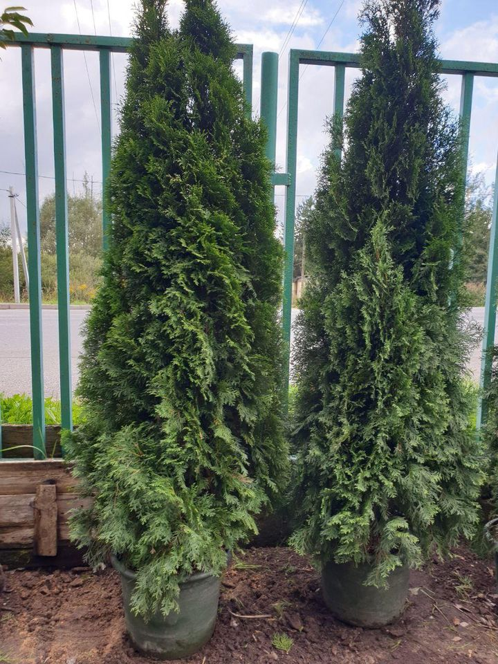
⠀ Растение относительно компактное: до 3 метров в высоту и до 100-150 см в диаметре.
⠀ Туя — теплолюбивое растение, место для посадки нужно выбрать солнечное. Ей также крайне важен чистый воздух и безветрие. Туя равнодушна к заморозкам и прекрасно себя чувствуют даже в северных широтах.
⠀ Дерево может расти практически на любой почве. Рекомендуемая смесь грунта должна состоят из дерновой земли и торфа, взятых в пропорции 2:1.
⠀ Поливать взрослое растение необходимо один раз в неделю одним ведром воды. Жарким летом частоту поливов лучше увеличить, чтобы засуха не вредила кроне дерева.
Туя Смарагд 2,0-2,5 м
12 500,00 p.
Подробная информация
Это хвойное растение, которое также известно под названием «жизненное дерево».⠀ Растение относительно компактное: до 3 метров в высоту и до 100-150 см в диаметре.
⠀ Туя — теплолюбивое растение, место для посадки нужно выбрать солнечное. Ей также крайне важен чистый воздух и безветрие. Туя равнодушна к заморозкам и прекрасно себя чувствуют даже в северных широтах.
⠀ Дерево может расти практически на любой почве. Рекомендуемая смесь грунта должна состоят из дерновой земли и торфа, взятых в пропорции 2:1.
⠀ Поливать взрослое растение необходимо один раз в неделю одним ведром воды. Жарким летом частоту поливов лучше увеличить, чтобы засуха не вредила кроне дерева.
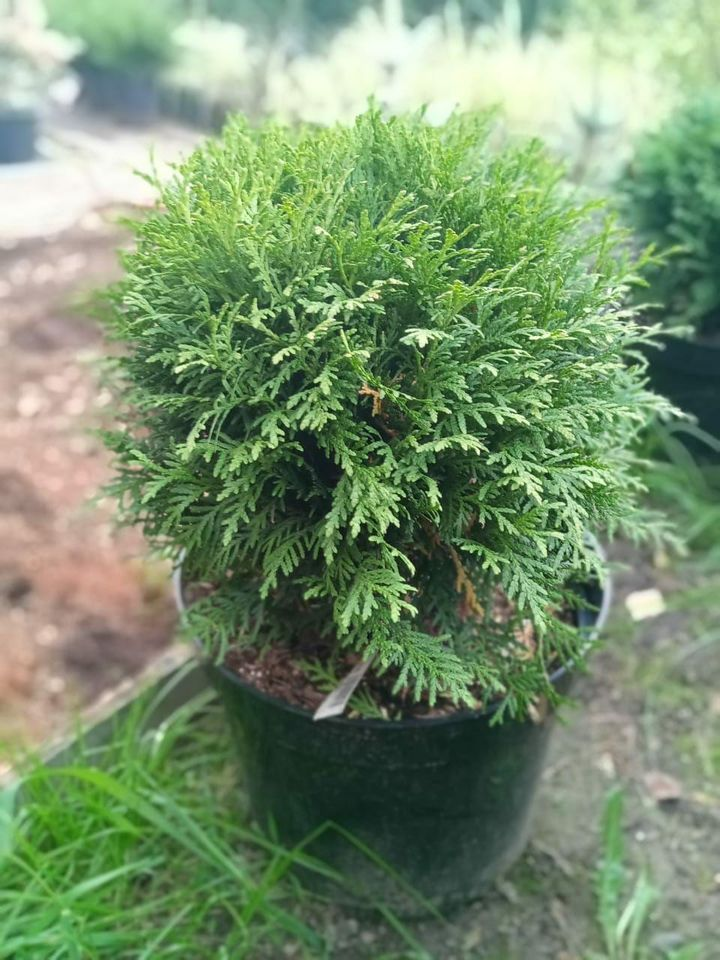
⠀ ☘ Туя Даника нетребовательна к условиям посадки и уходу и прекрасно растёт в открытом грунте.
⠀ 👨🌾 Посадку лучше всего совершать на солнечном месте. Это поможет сформировать идеальную здоровую крону. Также пространство должно быть укрытым от ветра. Туя Даника любит лёгкие слабокислые грунты.
⠀ 💦 Молодому растению необходим полив 1 раз в неделю (10–20 л воды). Со второго месяца с момента посадки частота полива сокращается. В засуху количество воды наоборот можно увеличить.
⠀ ☝️Выращивать тую Даника можно и как самостоятельный элемент декора, так и в сочетании с другими культурами. Она также отлично смотрится в качестве живой изгороди.
Туя Даника высотой 40-50 см
2 000,00 p.
Подробная информация
🌲 Растение обрело свою популярность благодаря превосходным декоративным свойствам. Особенностью сорта карликового дерева является аккуратная округлая крона.⠀ ☘ Туя Даника нетребовательна к условиям посадки и уходу и прекрасно растёт в открытом грунте.
⠀ 👨🌾 Посадку лучше всего совершать на солнечном месте. Это поможет сформировать идеальную здоровую крону. Также пространство должно быть укрытым от ветра. Туя Даника любит лёгкие слабокислые грунты.
⠀ 💦 Молодому растению необходим полив 1 раз в неделю (10–20 л воды). Со второго месяца с момента посадки частота полива сокращается. В засуху количество воды наоборот можно увеличить.
⠀ ☝️Выращивать тую Даника можно и как самостоятельный элемент декора, так и в сочетании с другими культурами. Она также отлично смотрится в качестве живой изгороди.
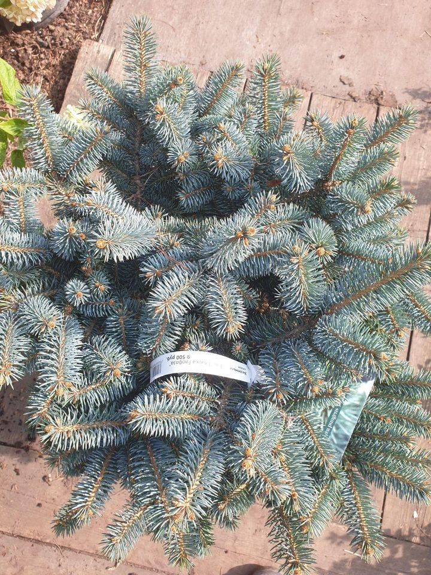
⠀ ☘ Место для посадки должно быть подальше от грунтовых вод. Необходимо сделать дренажный слой толщиной 15-20 см, из песка или битого кирпича.
⠀ 💦 Ели не любят сухую жаркую погоду, поэтому летом их необходимо поливать раз в неделю, примерно по 10-12 л на дерево.
Ель "Глобоза" С15
9 500,00 p.
Подробная информация
🌳 Ель Глаука — это декоративное хвойное растение. Крона конической формы. Особенностью ели является то, что взрослое растение приобретает серебристо-голубую окраску, за что она и получила своё название— "голубая ель".⠀ ☘ Место для посадки должно быть подальше от грунтовых вод. Необходимо сделать дренажный слой толщиной 15-20 см, из песка или битого кирпича.
⠀ 💦 Ели не любят сухую жаркую погоду, поэтому летом их необходимо поливать раз в неделю, примерно по 10-12 л на дерево.
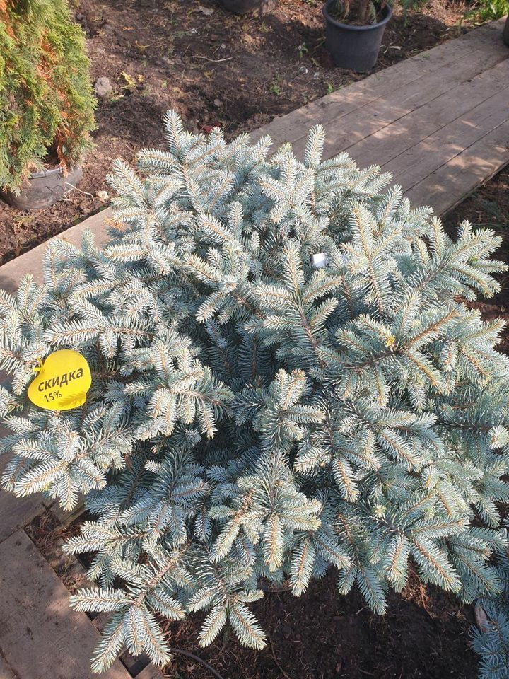
⠀ ☘ Место для посадки должно быть подальше от грунтовых вод. Необходимо сделать дренажный слой толщиной 15-20 см, из песка или битого кирпича.
⠀ 💦 Ели не любят сухую жаркую погоду, поэтому летом их необходимо поливать раз в неделю, примерно по 10-12 л на дерево.
Ель «Глаука» на штамбе 60 см
12 000,00 p.
Подробная информация
🌳 Ель Глаука — это декоративное хвойное растение. Крона конической формы. Особенностью ели является то, что взрослое растение приобретает серебристо-голубую окраску, за что она и получила своё название— "голубая ель".⠀ ☘ Место для посадки должно быть подальше от грунтовых вод. Необходимо сделать дренажный слой толщиной 15-20 см, из песка или битого кирпича.
⠀ 💦 Ели не любят сухую жаркую погоду, поэтому летом их необходимо поливать раз в неделю, примерно по 10-12 л на дерево.
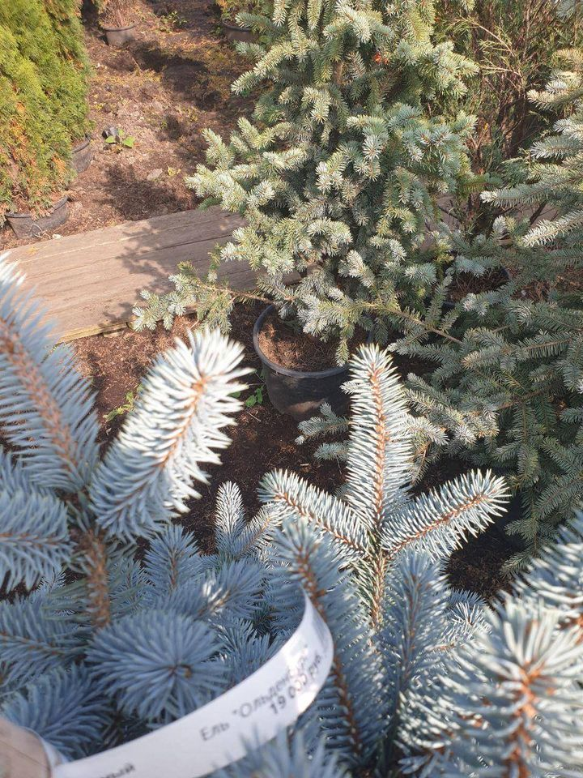
⠀ ☘ Место для посадки должно быть подальше от грунтовых вод. Необходимо сделать дренажный слой толщиной 15-20 см, из песка или битого кирпича.
⠀ 💦 Ели не любят сухую жаркую погоду, поэтому летом их необходимо поливать раз в неделю, примерно по 10-12 л на дерево.
Ель "Ольденбург" 1,4-1,6 м
19 500,00 p.
Подробная информация
🌳 Ель Глаука — это декоративное хвойное растение. Крона конической формы. Особенностью ели является то, что взрослое растение приобретает серебристо-голубую окраску, за что она и получила своё название— "голубая ель".⠀ ☘ Место для посадки должно быть подальше от грунтовых вод. Необходимо сделать дренажный слой толщиной 15-20 см, из песка или битого кирпича.
⠀ 💦 Ели не любят сухую жаркую погоду, поэтому летом их необходимо поливать раз в неделю, примерно по 10-12 л на дерево.
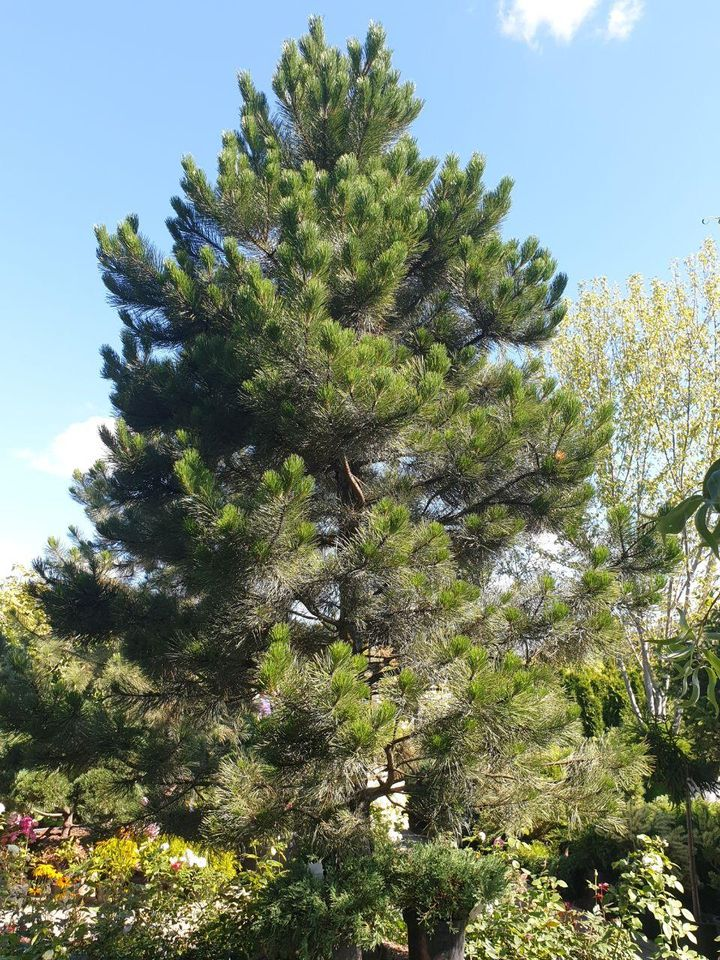
⠀ Данный сорт обладает пирамидальной кроной и темной корой. Высота сосны после 30 лет достигает 10 метров, а в ранние годы сосна растёт очень быстро.
⠀ Открытое солнечное место и дренированная почва с умеренной влажностью будут благоприятно способствовать росту растения. Конец апреля - начало мая — лучшее время для посадки чёрной сосны.
⠀ Перед приобретением саженца нужно предварительно подготовить лунку, на дно которой насыпать 20 см дренажа (керамзит или любой подручный материал). Плодородную землю смешать с торфом и песком.
⠀ Первый месяц после посадки черную сосну поливать 1 раз в неделю, далее — только при длительной засухе и то первые 2 года. Взрослое же дерево в поливе не нуждается.
Чёрная сосна Pinus Nigra
73 000,00 p.
Подробная информация
Это хвойное растение обрело свою популярность среди садоводов благодаря нетребовательности в уходе.⠀ Данный сорт обладает пирамидальной кроной и темной корой. Высота сосны после 30 лет достигает 10 метров, а в ранние годы сосна растёт очень быстро.
⠀ Открытое солнечное место и дренированная почва с умеренной влажностью будут благоприятно способствовать росту растения. Конец апреля - начало мая — лучшее время для посадки чёрной сосны.
⠀ Перед приобретением саженца нужно предварительно подготовить лунку, на дно которой насыпать 20 см дренажа (керамзит или любой подручный материал). Плодородную землю смешать с торфом и песком.
⠀ Первый месяц после посадки черную сосну поливать 1 раз в неделю, далее — только при длительной засухе и то первые 2 года. Взрослое же дерево в поливе не нуждается.
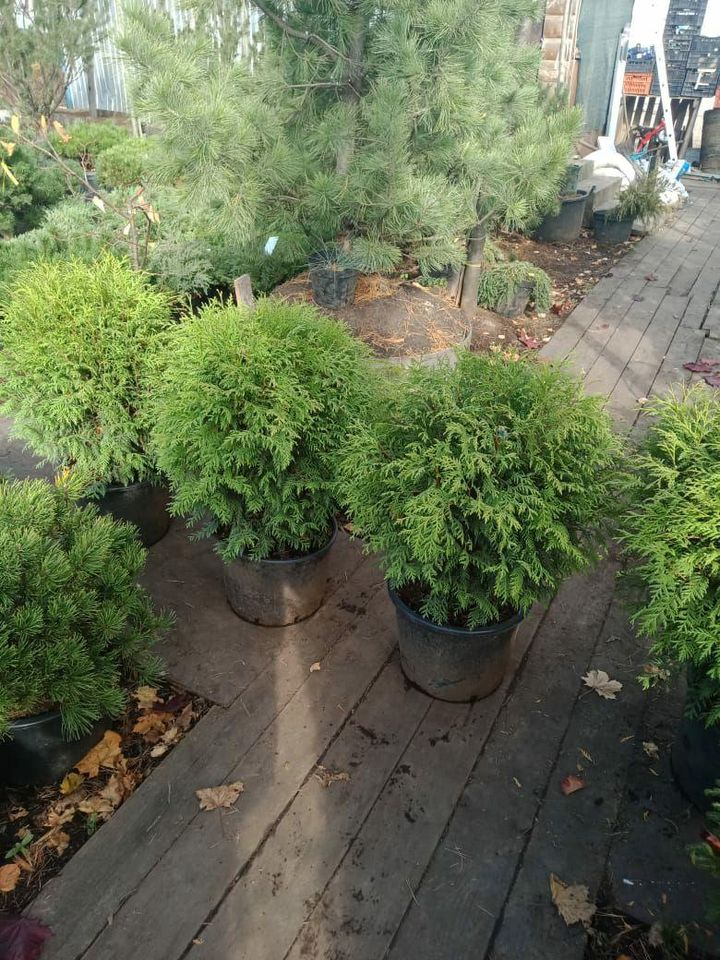
⠀ ☘️ Крона кустарника рыхлая, ветви прямые. Во время вегетационного периода цвет листвы зеленый, но к зиме он становится бронзовым или коричневым.
⠀ 👨🌾 Данный вид туи предпочитает влажный климат, солнечные участки, защищенные от ветра, с плодородной дренированной почвой, кислотностью pH 4,5-6,0, но также хорошо растёт в слегка затенённых местах. Устойчив к морозам, ветрам, а также городским условиям.
⠀ 💦 После посадки туя нуждается в регулярном поливе: около одного раза в неделю одним ведром воды на взрослое растение. Туя испаряет очень много влаги, поэтому хорошо отзывается на полив и дождевание.
⠀ ☝️Кустарник часто используется как в одиночных, так и в групповых посадках. Его высаживают в горшки или контейнеры на террасах, вдоль садовых дорожек.
Туя «Литл Чемпион» высотой 60-80 см
3 500,00 p.
Подробная информация
🌲 Это компактный хвойный кустарник, обладающий густой и округлой кроной. К 10 годам размер растения достигает 0,5 м в диаметре.⠀ ☘️ Крона кустарника рыхлая, ветви прямые. Во время вегетационного периода цвет листвы зеленый, но к зиме он становится бронзовым или коричневым.
⠀ 👨🌾 Данный вид туи предпочитает влажный климат, солнечные участки, защищенные от ветра, с плодородной дренированной почвой, кислотностью pH 4,5-6,0, но также хорошо растёт в слегка затенённых местах. Устойчив к морозам, ветрам, а также городским условиям.
⠀ 💦 После посадки туя нуждается в регулярном поливе: около одного раза в неделю одним ведром воды на взрослое растение. Туя испаряет очень много влаги, поэтому хорошо отзывается на полив и дождевание.
⠀ ☝️Кустарник часто используется как в одиночных, так и в групповых посадках. Его высаживают в горшки или контейнеры на террасах, вдоль садовых дорожек.
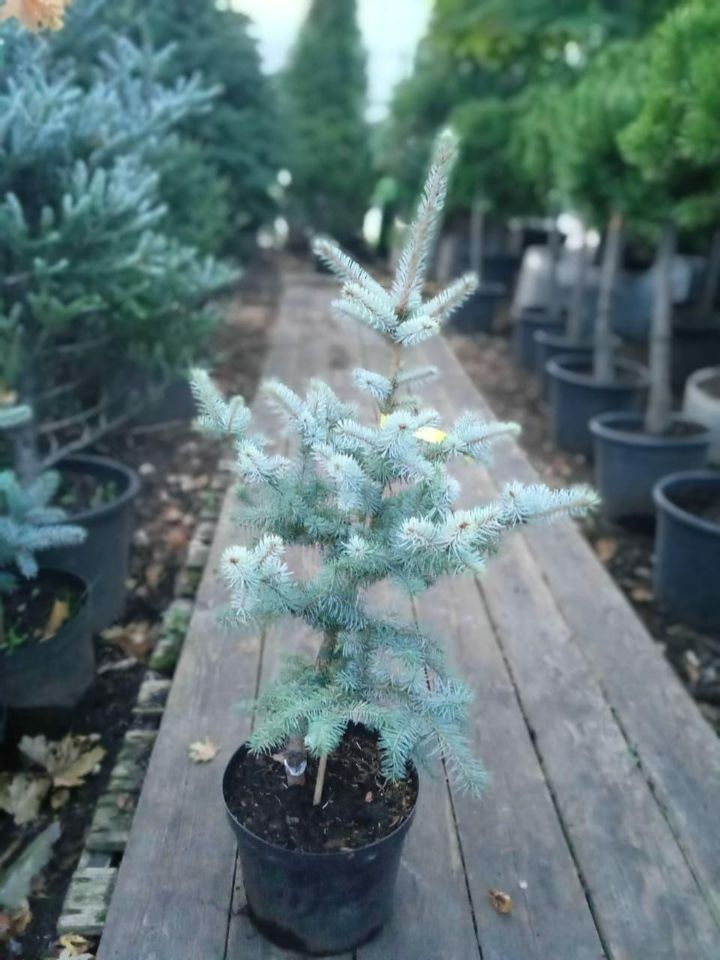
⠀ ☘ Место для посадки должно быть подальше от грунтовых вод. Необходимо сделать дренажный слой толщиной 15-20 см, из песка или битого кирпича.
⠀ 💦 Ели не любят сухую жаркую погоду, поэтому летом их необходимо поливать раз в неделю, примерно по 10-12 л на дерево. ⠀
Ель "Эдит" С7,5 высота 60-80 см
2 800,00 p.
Подробная информация
🌳 Ель Глаука — это декоративное хвойное растение. Крона конической формы. Особенностью ели является то, что взрослое растение приобретает серебристо-голубую окраску, за что она и получила своё название— "голубая ель".⠀ ☘ Место для посадки должно быть подальше от грунтовых вод. Необходимо сделать дренажный слой толщиной 15-20 см, из песка или битого кирпича.
⠀ 💦 Ели не любят сухую жаркую погоду, поэтому летом их необходимо поливать раз в неделю, примерно по 10-12 л на дерево. ⠀
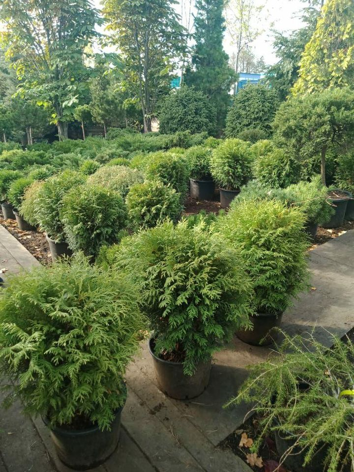
☘️ Крона кустарника рыхлая, ветви прямые. Во время вегетационного периода цвет листвы зеленый, но к зиме он становится бронзовым или коричневым.
👨🌾 Данный вид туи предпочитает влажный климат, солнечные участки, защищенные от ветра, с плодородной дренированной почвой, кислотностью pH 4,5-6,0, но также хорошо растёт в слегка затенённых местах. Устойчив к морозам, ветрам, а также городским условиям.
💦 После посадки туя нуждается в регулярном поливе: около одного раза в неделю одним ведром воды на взрослое растение. Туя испаряет очень много влаги, поэтому хорошо отзывается на полив и дождевание.
☝️Кустарник часто используется как в одиночных, так и в групповых посадках. Его высаживают в горшки или контейнеры на террасах, вдоль садовых дорожек.
Туя «Литл Чемпион» в контейнере С5, высотой 60-80 см
3 500 p.
Подробная информация
🌲 Это компактный хвойный кустарник, обладающий густой и округлой кроной. К 10 годам размер растения достигает 0,5 м в диаметре.☘️ Крона кустарника рыхлая, ветви прямые. Во время вегетационного периода цвет листвы зеленый, но к зиме он становится бронзовым или коричневым.
👨🌾 Данный вид туи предпочитает влажный климат, солнечные участки, защищенные от ветра, с плодородной дренированной почвой, кислотностью pH 4,5-6,0, но также хорошо растёт в слегка затенённых местах. Устойчив к морозам, ветрам, а также городским условиям.
💦 После посадки туя нуждается в регулярном поливе: около одного раза в неделю одним ведром воды на взрослое растение. Туя испаряет очень много влаги, поэтому хорошо отзывается на полив и дождевание.
☝️Кустарник часто используется как в одиночных, так и в групповых посадках. Его высаживают в горшки или контейнеры на террасах, вдоль садовых дорожек.
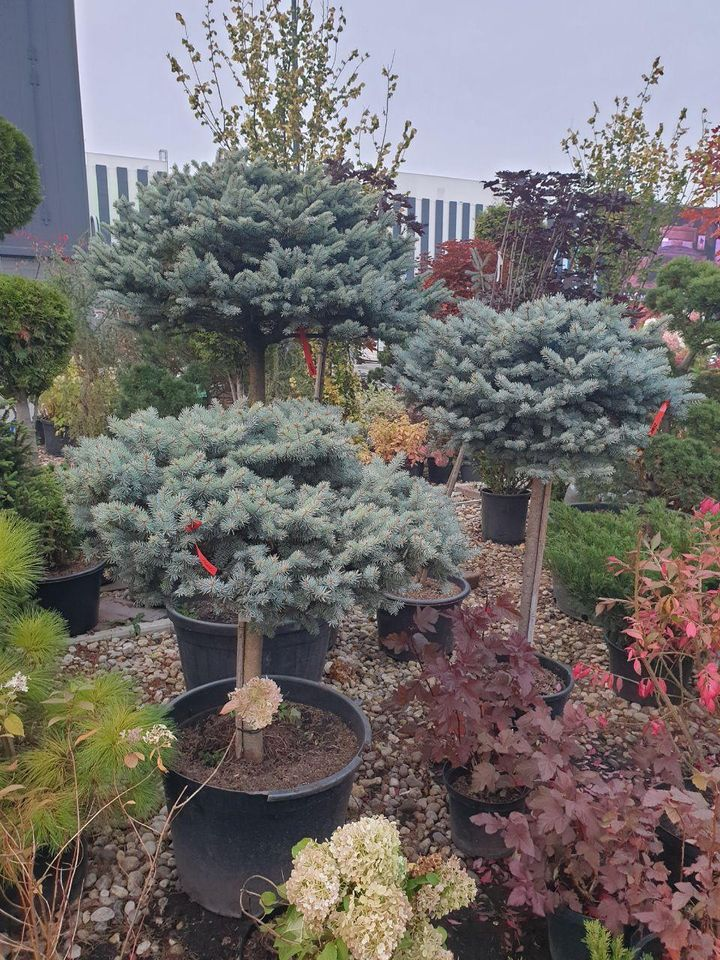
☘ Место для посадки должно быть подальше от грунтовых вод. Необходимо сделать дренажный слой толщиной 15-20 см, из песка или битого кирпича.
💦 Ели не любят сухую жаркую погоду, поэтому летом их необходимо поливать раз в неделю, примерно по 10-12 л на дерево.
Ель "Глобоза" штамб 0,6 м
12 000 p.
Подробная информация
🌳 Ель Глаука — это декоративное хвойное растение. Крона конической формы. Особенностью ели является то, что взрослое растение приобретает серебристо-голубую окраску, за что она и получила своё название— "голубая ель".☘ Место для посадки должно быть подальше от грунтовых вод. Необходимо сделать дренажный слой толщиной 15-20 см, из песка или битого кирпича.
💦 Ели не любят сухую жаркую погоду, поэтому летом их необходимо поливать раз в неделю, примерно по 10-12 л на дерево.
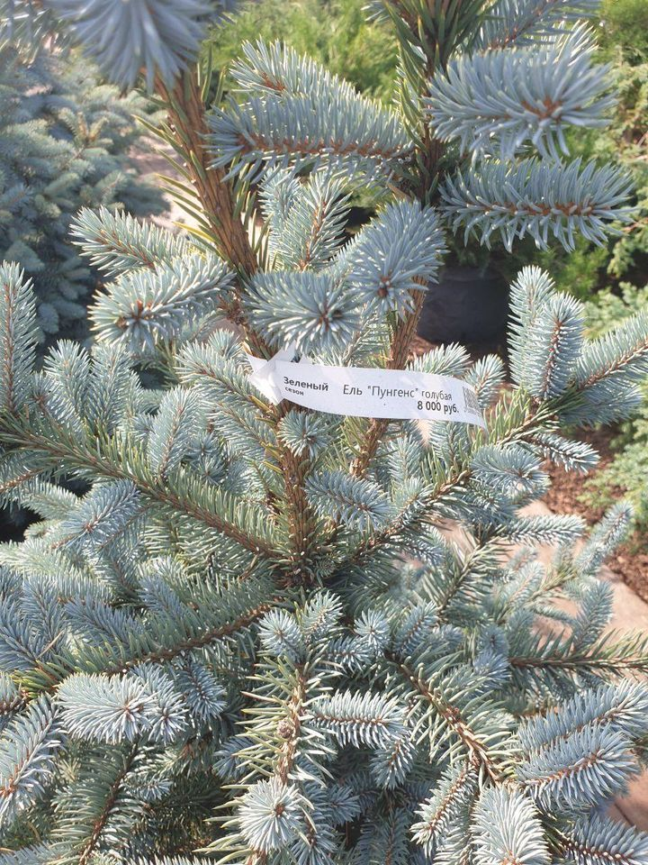
☘ Место для посадки должно быть подальше от грунтовых вод. Необходимо сделать дренажный слой толщиной 15-20 см, из песка или битого кирпича.
💦 Ели не любят сухую жаркую погоду, поэтому летом их необходимо поливать раз в неделю, примерно по 10-12 л на дерево.
Ель "Пунгенс" С25 высотой 1,00-1,20 м
8 000 p.
Подробная информация
🌳 Ель Глаука — это декоративное хвойное растение. Крона конической формы. Особенностью ели является то, что взрослое растение приобретает серебристо-голубую окраску, за что она и получила своё название— "голубая ель".☘ Место для посадки должно быть подальше от грунтовых вод. Необходимо сделать дренажный слой толщиной 15-20 см, из песка или битого кирпича.
💦 Ели не любят сухую жаркую погоду, поэтому летом их необходимо поливать раз в неделю, примерно по 10-12 л на дерево.
Ель "Глобоза" штамб 0,8 м
18 000 p.
Подробная информация
🌳 Ель Глаука — это декоративное хвойное растение. Крона конической формы. Особенностью ели является то, что взрослое растение приобретает серебристо-голубую окраску, за что она и получила своё название— "голубая ель".☘ Место для посадки должно быть подальше от грунтовых вод. Необходимо сделать дренажный слой толщиной 15-20 см, из песка или битого кирпича.
💦 Ели не любят сухую жаркую погоду, поэтому летом их необходимо поливать раз в неделю, примерно по 10-12 л на дерево.
Ель "Глобоза" штамб 1 м
32 000 p.
Подробная информация
🌳 Ель Глаука — это декоративное хвойное растение. Крона конической формы. Особенностью ели является то, что взрослое растение приобретает серебристо-голубую окраску, за что она и получила своё название— "голубая ель".☘ Место для посадки должно быть подальше от грунтовых вод. Необходимо сделать дренажный слой толщиной 15-20 см, из песка или битого кирпича. ⠀
💦 Ели не любят сухую жаркую погоду, поэтому летом их необходимо поливать раз в неделю, примерно по 10-12 л на дерево.
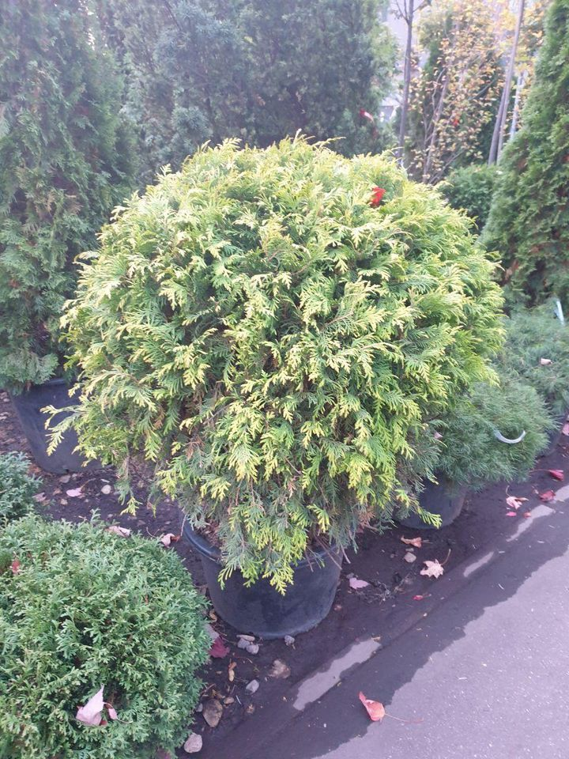
👆Пишите сообщения или звоните по телефону в шапке профиля @green_season.ru Мы всегда готовы помочь и ответим на любые Ваши вопросы!
⠀ 📲 +7 (495) 926-09-90
Туя шар Голоден Глоб С35 1,00 м
12 000 p.
Подробная информация
💖 Понравилось растение? Тогда узнавайте подробности приобретения, доставки, посадки и ухода!👆Пишите сообщения или звоните по телефону в шапке профиля @green_season.ru Мы всегда готовы помочь и ответим на любые Ваши вопросы!
⠀ 📲 +7 (495) 926-09-90
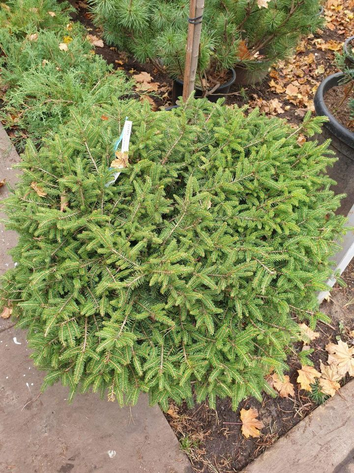
👆Пишите сообщения или звоните по телефону в шапке профиля @green_season.ru Мы всегда готовы помочь и ответим на любые Ваши вопросы!
⠀ 📲 +7 (495) 926-09-90
Ель "Недиформис" С40 высота 0,6 м диаметр 0,8 м
14 000 p.
Подробная информация
💖 Понравилось растение? Тогда узнавайте подробности приобретения, доставки, посадки и ухода!👆Пишите сообщения или звоните по телефону в шапке профиля @green_season.ru Мы всегда готовы помочь и ответим на любые Ваши вопросы!
⠀ 📲 +7 (495) 926-09-90